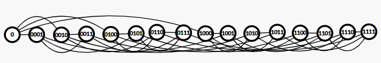
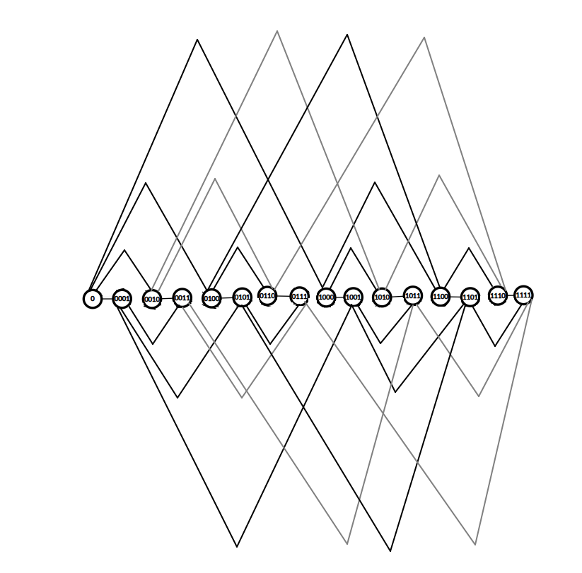
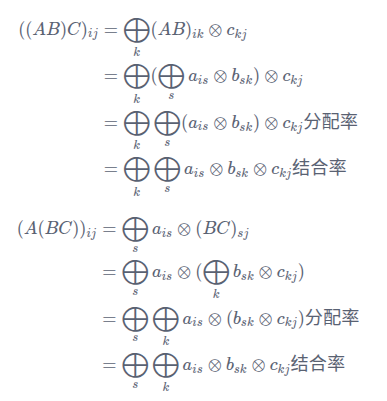
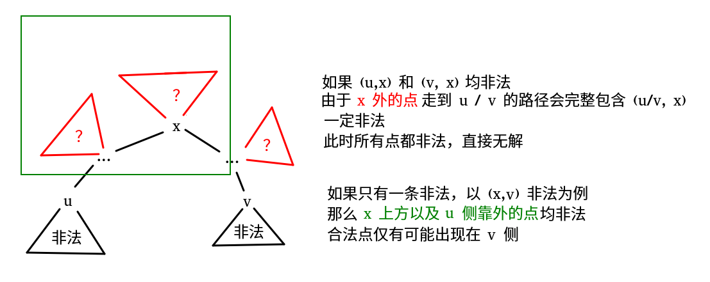

模拟赛 and so on
CF1923F Shrink-Reverse
https://www.luogu.com.cn/problem/CF1923F
需要想到贪心策略，但正确的策略并没有那么显然。
观察样例可以大胆猜测，
SHRINK_REVERSE只会用最多一次。尝试理解这一点：- 只考虑
SHRINK，那么发现只有最后一次SHRINK是有效的。 - 只考虑
REVERSE，那么只需要将两次REVERSE中间的SWAP进行翻转，并删除这两次REVERSE，就可以达到相同的作用。
综上，只需要保留最后一次
SHRINK_REVERSE，剩下的可以通过翻转对应的SWAP操作达到相同的效果，节省操作次数。且显然这次SHRINK_REVERSE应该放在操作序列的末尾。- 只考虑
因此，只需要讨论不
SHRINK_REVERSE、在最后SHRINK_REVERSE两种情况。对于不
SHRINK_REVERSE的情况，直接贪心即可。对于最后再
SHRINK_REVERSE的情况，不妨先REVERSE，考虑找到SHRINK后对应的原始字符串上的区间。也即考虑找到一个最短的子串，使得能够通过 \(k-1\) 次
SWAP把子串外的 \(1\) 全部换到子串内。问题具有一定的单调性，故可以双指针对于每个 \(l\) 找到最小的 \(r\)。接下来仍然可以贪心最小化答案。
很容易说明区间长最短的才能竞争最优：要么 \(l\) 初始为 \(1\)，要么区间长就是 \(1\) 总数；
很容易说明相同长度的参与竞争的区间，字典序最小的最优。
故接下来需要比较这 \(O(n)\) 个长度相同的答案区间的字典序。SA 即可。
#include <bits/stdc++.h>
const int mod = 1e9 + 7;
int main() {
#ifdef ONLINE_JUDGE
std::ios::sync_with_stdio(false);
std::cin.tie(nullptr), std::cout.tie(nullptr);
#else
std::freopen(".in", "r", stdin);
std::freopen(".out", "w", stdout);
const auto stime = std::chrono::steady_clock::now();
#endif
int n, k;
std::string s, res1, res2;
std::cin >> n >> k >> s, s = '#' + s;
res1 = s;
for (int i = 1, j = n, l = 1; l <= k && i < j; ++i, --j, ++l) {
for (; i < j && res1[i] != '1'; ++i);
for (; i < j && res1[j] != '0'; --j);
if (i < j)
std::swap(res1[i], res1[j]);
}
for (int i = 1; i <= n; ++i)
if (res1[i] == '1') {
res1 = '#' + res1.substr(i, n - i + 1);
break;
}
std::reverse(s.begin() + 1, s.end());
std::vector<int> pos;
const int s1 = std::count(s.begin() + 1, s.end(), '1');
int len = n;
for (int l = 1, r = 0, c1 = 0, c0 = 0; l <= n; ++l) {
for (; r < n && (c0 < s1 - c1 || s1 - c1 > k - 1); )
if (s[++r] == '1') ++c1;
else ++c0;
if (c0 >= s1 - c1 && s1 - c1 <= k - 1) {
if (r - l + 1 < len)
len = r - l + 1, pos.clear();
if (r - l + 1 == len)
pos.push_back(l);
}
if (s[l] == '1') --c1;
else --c0;
}
std::vector<int> sa(n + 1), rk(2 * n + 1);
{
int m = 128;
std::vector<int> c(std::max(n, m) + 1), id, la(2 * n + 1);
std::copy(s.begin() + 1, s.end(), rk.begin() + 1);
for (int i = 1; i <= n; ++i)
++c[rk[i]];
std::partial_sum(c.begin() + 1, c.begin() + m + 1, c.begin() + 1);
for (int i = n; i; --i)
sa[c[rk[i]]--] = i;
for (int w = 1, p; ; w <<= 1, m = p) {
id.clear(), id.push_back(-1);
for (int i = n - w + 1; i <= n; ++i)
id.push_back(i);
for (int i = 1; i <= n; ++i)
if (sa[i] > w)
id.push_back(sa[i] - w);
std::fill(c.begin() + 1, c.begin() + m + 1, 0);
for (int i = 1; i <= n; ++i)
++c[rk[i]];
std::partial_sum(c.begin() + 1, c.begin() + m + 1, c.begin() + 1);
for (int i = n; i; --i)
sa[c[rk[id[i]]]--] = id[i];
p = 0;
std::copy(rk.begin() + 1, rk.end(), la.begin() + 1);
for (int i = 1; i <= n; ++i)
if (i != 1 && la[sa[i]] == la[sa[i - 1]] && la[sa[i] + w] == la[sa[i - 1] + w])
rk[sa[i]] = p;
else
rk[sa[i]] = ++p;
if (p == n)
break;
}
}
int id = 0;
for (auto i : pos)
if (id == 0 || rk[i] < rk[id])
id = i;
if (id == 0)
assert(len == n), id = 1;
res2 = '#' + s.substr(id, len);
int tot = s1 - std::count(res2.begin() + 1, res2.end(), '1');
for (int i = len; tot--; --i) {
for (; res2[i] != '0'; --i);
res2[i] = '1';
}
if (res1.length() == res2.length())
s = std::min(res1, res2);
else if (res1.length() < res2.length())
s = res1;
else
s = res2;
auto res = 0ll;
for (int i = 1; i < (int)s.size(); ++i)
res = (res * 2 + s[i] - '0') % mod;
std::cout << res << '\n';
#ifndef ONLINE_JUDGE
std::cerr << std::fixed << std::setprecision(6) << std::chrono::duration<double> (std::chrono::steady_clock::now() - stime).count() << "s\n";
#endif
return 0;
}CF1859F Teleportation in Byteland
https://www.luogu.com.cn/problem/CF1859F
题设让树自然呈现一个分层图的结构。贪心地，最优的路径一定为 \(a_i\to u\)，（在 \(u\) 学习若干次），\(u\to b_i\)。
枚举一个学习次数 \(k\)（显然 \(k\) 不会超过 \(\left\lceil\log_2n\right\rceil\)），并令 \(d_k(u,v)\) 表示在学习 \(k\) 次后的分层图上 \(u\) 与 \(v\) 的距离。最后的答案可以表示为 \(\min\limits_{u,k}\{d_0(a_i,u)+d_k(u,b_i)+k\cdot T\}\)。
现在希望能够快速地找到，对于一个固定的 \(k\)，使答案最小的 \(u\)。询问与路径相关，所以期望一种能和路径挂钩的答案表示方法（似乎是经典 trick）。容易想到链 \((a_i,b_i)\) 上离 \(u\) 最近的点 \(v\)，答案可以改写成：
\[ \min\limits_{u,v}\{d_0(a_i,v)+d_k(v,b_i)+d_0(v,u)+d_k(u,v)\}+k\cdot T \]
其中，\(d_0(v,u)+d_k(u,v)\) 与具体的 \(a,b\) 无关，可以用一次多源 Dij 预处理出每个 \(v\) 的答案（记为 \(s_k(v)\)）（需要注意到 \(d_0(v,u)\) 和 \(d_k(u,v)\) 可能不同时取最小，可以用 \(w_0+w_k\) 作边权）；\(d_0(a_i,v)+d_k(v,b_i)\) 则可以通过讨论 LCA 直接用深度表示，求出最值。
记 \(fa=\text{LCA}(a_i,b_i)\)，当 \(v\) 在 \(fa\to a_i\) 上时，答案为：
\[ (dep_k(v)+s_k(v)-dep_0(v))+(dep_k(b_i)-2dep_k(fa)+dep_0(a_i)+k\cdot T) \]
当 \(v\) 在 \(fa\to b_i\) 上时，答案为：
\[ (dep_0(v)+s_k(v)-dep_k(v))+(dep_0(a_i)-2dep_0(fa)+dep_k(b_i)+k\cdot T) \]
维护链上 \(dep_k(v)+s_k(v)-dep_0(v)\) 和 \(dep_0(v)+s_k(v)-dep_k(v)\) 的最小值即可。
- 由于是完全静态的树上路径问题，可以用倍增完成。注意考虑学 \(0\) 次的情况。复杂度 \(O(n\log^2 n)\)。
咦你怎么 MLE 了？只需要把所有询问离线下来，每个 \(k\) 就可以共用数组了。
看到 Limury 的做法是树剖 + st 表，薄纱所有人。Rosmist 树剖 + bit 三只 log 也薄纱倍增做法，我怎么会做这样的梦。
#include <bits/stdc++.h>
const int maxn = 1e5 + 5;
int main() {
#ifdef ONLINE_JUDGE
std::ios::sync_with_stdio(false);
std::cin.tie(nullptr), std::cout.tie(nullptr);
#else
std::freopen(".in", "r", stdin);
std::freopen(".out", "w", stdout);
const auto stime = std::chrono::steady_clock::now();
#endif
int T;
for (std::cin >> T; T--; ) {
int n, t;
std::cin >> n >> t;
std::vector<std::vector<std::pair<int, int> > > g(n + 1);
for (int i = 1, x, y, w; i < n; ++i) {
std::cin >> x >> y >> w;
g[x].emplace_back(y, w), g[y].emplace_back(x, w);
}
std::vector<int> tag(n + 1);
for (int i = 1; i <= n; ++i) {
char t;
std::cin >> t, tag[i] = t - '0';
}
auto fun = [&](int w, int k) {
return (w + (1 << k) - 1) >> k;
};
std::vector<long long> s(n + 1);
std::vector<int> dep(n + 1), vis(n + 1);
std::vector<std::array<int, 17> > fa(n + 1);
std::vector<std::array<long long, 17> > f1(n + 1), f2(n + 1);
std::vector<std::vector<long long> > dis(2, std::vector<long long> (n + 1));
std::function<void(int)> DFS = [&](int x) {
for (auto [i, w] : g[x])
if (i != fa[x][0]) {
dep[i] = dep[x] + 1;
dis[0][i] = dis[0][x] + w;
fa[i][0] = x;
for (int j = 1; j < 17; ++j)
fa[i][j] = fa[fa[i][j - 1]][j - 1];
DFS(i);
}
return;
};
dep[1] = 1, DFS(1);
auto getLCA = [&](int x, int y) {
if (dep[x] < dep[y])
std::swap(x, y);
for (int i = 16; ~i; --i)
if (dep[fa[x][i]] >= dep[y])
x = fa[x][i];
if (x == y)
return x;
for (int i = 16; ~i; --i)
if (fa[x][i] != fa[y][i])
x = fa[x][i], y = fa[y][i];
return fa[x][0];
};
int m;
std::cin >> m;
std::vector<long long> res(m + 1);
std::vector<std::pair<int, int> > q(m + 1);
for (int i = 1, u, v; i <= m; ++i) {
std::cin >> u >> v;
res[i] = dis[0][u] + dis[0][v] - 2 * dis[0][getLCA(u, v)];;
q[i] = { u, v };
}
for (int j = 0; j < 17; ++j)
f1[0][j] = f2[0][j] = 1e18;
for (int k = 1; k <= 20; ++k) {
{
std::priority_queue<std::pair<long long, int> > q;
for (int i = 1; i <= n; ++i) {
vis[i] = 0;
if (tag[i])
s[i] = 0ll, q.emplace(0ll, i);
else
s[i] = 1e18;
}
for (; !q.empty(); ) {
int x = q.top().second;
q.pop();
if (vis[x])
continue;
vis[x] = 1;
for (auto [v, w] : g[x])
if (s[v] > s[x] + fun(w, k) + w) {
s[v] = s[x] + fun(w, k) + w;
q.emplace(-s[v], v);
}
}
}
DFS = [&](int x) {
for (auto [i, w] : g[x])
if (i != fa[x][0]) {
dis[1][i] = dis[1][x] + fun(w, k);
f1[i][0] = dis[1][i] + s[i] - dis[0][i];
f2[i][0] = dis[0][i] + s[i] - dis[1][i];
for (int j = 1; j < 17; ++j) {
f1[i][j] = std::min(f1[i][j - 1], f1[fa[i][j - 1]][j - 1]);
f2[i][j] = std::min(f2[i][j - 1], f2[fa[i][j - 1]][j - 1]);
}
DFS(i);
}
return;
};
DFS(1);
for (int i = 1; i <= m; ++i) {
auto [u, v] = q[i];
int x = u, y = v;
long long s1 = 1e18, s2 = 1e18;
if (dep[x] > dep[y]) {
for (int i = 16; ~i; --i)
if (dep[fa[x][i]] >= dep[y]) {
s1 = std::min(s1, f1[x][i]);
x = fa[x][i];
}
}
else {
for (int i = 16; ~i; --i)
if (dep[fa[y][i]] >= dep[x]) {
s2 = std::min(s2, f2[y][i]);
y = fa[y][i];
}
}
if (x != y) {
for (int i = 16; ~i; --i)
if (fa[x][i] != fa[y][i]) {
s1 = std::min(s1, f1[x][i]);
s2 = std::min(s2, f2[y][i]);
x = fa[x][i], y = fa[y][i];
}
s1 = std::min(s1, f1[x][0]);
s2 = std::min(s2, f2[y][0]);
x = fa[x][0];
}
s1 = std::min(s1, dis[1][x] + s[x] - dis[0][x]);
s2 = std::min(s2, dis[0][x] + s[x] - dis[1][x]);
res[i] = std::min(res[i], k * t + dis[0][u] + dis[1][v] + std::min(s1 - 2 * dis[1][x], s2 - 2 * dis[0][x]));
}
}
for (int i = 1; i <= m; ++i)
std::cout << res[i] << '\n';
}
#ifndef ONLINE_JUDGE
std::cerr << std::fixed << std::setprecision(6) << std::chrono::duration<double> (std::chrono::steady_clock::now() - stime).count() << "s\n";
#endif
return 0;
}CF1556G Gates to Another World
https://www.luogu.com.cn/problem/CF1556G
快速做出来需要一定运气，需要把点顺序排布而不是像题目一样画晶胞（。）手玩一下 \(n=4\) 时的情况：

看到两个相邻点间连的边就应激想到线段树了，事实上把不同层的边提起来发现就是线段树的结构。
为什么这个图这么大（没啥用故折起来了）
tip：实际上那些相邻 / 相反的尖尖是重合的，为了好看一点故错开。

发现形成一个相邻子树对位连边的结构。这里线段树其实只有底层点是有意义的，其他点只起结构辅助作用。
实际上，对于两个有连边的点，它们『LCA』的高度是被 flip 的位。
很容易注意到一个线段树子树内的底层点是连通的，这一点也很容易递归地证明。
考虑动态开点线段树优化建图，对于动态开点出来的叶子（注意不是底层点），容易发现在题目限制下每个叶子内部都没有点被删除，是连通的（那么此时不妨认为叶子就代表了这个连通块）。
故将某个点进行连边时，并不要求找到对位的那个点（不一定存在），和走到头的叶子连边就可以达到相同的连通效果。这样就把底层点之间的连边转化为了叶子间的连边。
不妨先时光倒流 + 预处理出每个叶子最后（最早）存在的时间戳，考虑暴力连出来这些叶子间的边（对于每个点，将对位的叶子连边）并计算出边最后（最早）存在的时间戳。
发现暴力对位连边这个操作，是形似线段树合并但比线段树合并更劣的东西。咋分析复杂度。
边是双向的，考虑更深的叶子的贡献。那么其枚举 lca + flip 对应位（不存在则取路径上的叶子），一共会有 \(O(n)\) 次连边。共有 \(O(nm)\) 个叶子，摊下来暴力连边复杂度为 \(O(n^2m)\)。
空间很卡…… 不要把离线的加边数组开成 long long 了。
#include <bits/stdc++.h>
const int maxn = 32e5 + 5;
using ll = long long;
struct { int l, r, d; } t[maxn];
int tot;
#define lt t[p].l
#define rt t[p].r
#define leaf(p) (!t[p].l && !t[p].r)
int newnode(void) {
++tot, t[tot].l = t[tot].r = t[tot].d = 0;
return tot;
}
void pushdown(int p) {
if (t[p].d) {
if (!lt)
lt = newnode();
if (!rt)
rt = newnode();
t[lt].d = t[rt].d = t[p].d;
t[p].d = 0;
}
return;
}
void upd(int &p, ll l, ll r, ll ql, ll qr, int v) {
if (!p)
p = newnode();
if (ql <= l && r <= qr) {
t[p].d = v;
return;
}
pushdown(p);
auto mid = (l + r) >> 1;
if (ql <= mid)
upd(lt, l, mid, ql, qr, v);
if (qr > mid)
upd(rt, mid + 1, r, ql, qr, v);
return;
}
int ask(int p, ll l, ll r, ll x) {
if (leaf(p))
return p;
ll mid = (l + r) >> 1;
if (x <= mid)
return ask(lt, l, mid, x);
return ask(rt, mid + 1, r, x);
}
#undef lt
#undef rt
int main() {
#ifdef ONLINE_JUDGE
std::ios::sync_with_stdio(false);
std::cin.tie(nullptr), std::cout.tie(nullptr);
#else
std::freopen(".in", "r", stdin);
std::freopen(".out", "w", stdout);
const auto stime = std::chrono::steady_clock::now();
#endif
int n, m, rt = newnode();
std::cin >> n >> m;
t[rt].d = m + 1;
const auto N = (1ll << n) - 1;
struct query { int op; ll s, t; };
std::vector<query> q(m + 1);
for (int i = 1; i <= m; ++i) {
std::string op;
std::cin >> op;
q[i].op = (op == "ask") + 1;
std::cin >> q[i].s >> q[i].t;
if (q[i].op == 1)
upd(rt, 0ll, N, q[i].s, q[i].t, i);
}
std::vector<int> f(tot + 1);
std::iota(f.begin() + 1, f.end(), 1);
std::function<int(int)> find = [&](int x) {
return x == f[x] ? x : f[x] = find(f[x]);
};
auto merge = [&](int x, int y) {
f[find(x)] = find(y);
return;
};
std::vector<std::vector<std::pair<int, int> > > u(m + 2);
std::function<void(int, int)> link = [&](int p, int q) {
if (leaf(p) && leaf(q)) {
u[std::min(t[p].d, t[q].d)].emplace_back(p, q);
return;
}
else if (leaf(p))
link(p, t[q].l), link(p, t[q].r);
else if (leaf(q))
link(t[p].l, q), link(t[p].r, q);
else
link(t[p].l, t[q].l), link(t[p].r, t[q].r);
return;
};
for (int i = 1; i <= tot; ++i)
if (t[i].l && t[i].r)
link(t[i].l, t[i].r);
for (auto [p, q] : u[m + 1])
merge(p, q);
std::vector<int> res;
for (int i = m; i; --i)
if (q[i].op == 2)
res.push_back(find(ask(rt, 0, N, q[i].s)) == find(ask(rt, 0, N, q[i].t)));
else
for (auto [p, q] : u[i])
merge(p, q);
for (; !res.empty(); res.pop_back())
std::cout << res.back() << '\n';
#ifndef ONLINE_JUDGE
std::cerr << std::fixed << std::setprecision(6) << std::chrono::duration<double> (std::chrono::steady_clock::now() - stime).count() << "s\n";
#endif
return 0;
}C. 小 Z 爱优化
https://www.becoder.com.cn/contest/6662/problem/3
给定 \(a_{1\sim n}\)，将其分为若干连续段，满足每段长度为 \(1\) 或 \(2\)，定义一段的权值为元素之和，最小化段权值的极差并输出之。
\(n\le 2\times 10^5,V=10^9\)。
令 \(f_{i,j}\) 表示这一段以 \(i\) 结尾，最小值为 \(j\) 时的最大值。把最小值当状态是自然的想法，实际似乎差不多（。）得到（不重要）：
\[ f_{i,a_i}\gets f_{i-1,j},j\ge a_i\\ f_{i,a_i+a_{i-1}}\gets f_{i-2,j},j\ge a_i+a_{i-1}\\ f_{i,j}\gets \max(f_{i-1,j},a_i) ,j\le a_i\\ f_{i,j}\gets \max(f_{i-2,j},a_i+a_{i-1}) ,j\le a_i \]
这个状态很矩阵，可以考虑下标分奇偶性继承，用线段树优化，矩阵作为元素；然而同时涉及两个维度，尤其是第一维的变化，实在是答辩啊！
By the way，广义矩乘的结合律？
对于一个 \(\oplus-\otimes\) 矩阵（内层为 \(\otimes\)，外层为 \(\oplus\)），其有结合律当且仅当同时满足：
- \(\oplus\) 有交换律；
- \(\otimes\) 有结合律；
- \(\otimes\) 对 \(\oplus\) 有分配律。
 来自 qkhm 关于广义矩阵乘法常见误区的一点纠正 发现第二维其实不会怎么变，或者说第二维其实起的是一个限制性的作用，可以考虑把第二维放到外层循环，相当于枚举限制。我们知道上面的做法可以很快地优化，所以拿出去了之后大概也能做。
若限制当前最小值不能小于 \(j\)，那么有：
\[ f_i\gets \max(f_{i-1},a_i),a_j\ge j\\ f_i\gets \max(f_{i-2},a_i+a_{i-1}),a_i+a_{i-1}\ge j \]
发现这就很显然是一个 DDP 的形式了，每次 \(j\) 改变时，只需要改动对应位置的矩阵（即是否能进行转移），总修改次数是 \(O(n)\) 的。
#include <bits/stdc++.h>
const int maxn = 2e5 + 5;
const int inf = 0x7fffffff;
using mat = std::array<std::array<int, 2>, 2>;
int m[maxn][2][2];
void mul(mat &res, mat &p, mat &q) {
res[0][0] = std::min(std::max(p[0][0], q[0][0]), std::max(p[0][1], q[1][0]));
res[0][1] = std::min(std::max(p[0][0], q[0][1]), std::max(p[0][1], q[1][1]));
res[1][0] = std::min(std::max(p[1][0], q[0][0]), std::max(p[1][1], q[1][0]));
res[1][1] = std::min(std::max(p[1][0], q[0][1]), std::max(p[1][1], q[1][1]));
return;
}
struct {
int l, r;
mat u;
} t[maxn << 2];
#define lt (p << 1)
#define rt (lt | 1)
void bld(int p, int l, int r) {
t[p].l = l, t[p].r = r;
if (l == r) {
t[p].u[0][0] = m[l][0][0];
t[p].u[0][1] = m[l][0][1];
t[p].u[1][0] = m[l][1][0];
t[p].u[1][1] = m[l][1][1];
return;
}
int mid = (l + r) >> 1;
bld(lt, l, mid), bld(rt, mid + 1, r);
mul(t[p].u, t[lt].u, t[rt].u);
return;
}
void upd(int p, int x) {
if (t[p].l == t[p].r) {
t[p].u[0][1] = m[x][0][1];
t[p].u[1][1] = m[x][1][1];
return;
}
int mid = (t[p].l + t[p].r) >> 1;
if (x <= mid)
upd(lt, x);
else
upd(rt, x);
mul(t[p].u, t[lt].u, t[rt].u);
return;
}
#undef lt
#undef rt
int main() {
#ifdef ONLINE_JUDGE
std::ios::sync_with_stdio(false);
std::cin.tie(nullptr), std::cout.tie(nullptr);
std::freopen("opti.in", "r", stdin);
std::freopen("opti.out", "w", stdout);
#else
std::freopen("./test/20251021/opti/1.in", "r", stdin);
std::freopen(".out", "w", stdout);
auto stime = std::chrono::steady_clock::now();
#endif
int T;
for (std::cin >> T; T--; ) {
int n;
std::cin >> n;
std::vector<int> a(n + 1), b(n + 1), l(1);
for (int i = 1; i <= n; ++i) {
std::cin >> a[i];
l.push_back(a[i]);
if (i > 1)
b[i] = a[i] + a[i - 1], l.push_back(b[i]);
}
std::sort(l.begin() + 1, l.end());
l.erase(std::unique(l.begin() + 1, l.end()), l.end());
int m = (int)l.size() - 1;
std::vector<std::vector<int> > ida(m + 1), idb(m + 1);
for (int i = 1; i <= n; ++i) {
a[i] = std::lower_bound(l.begin() + 1, l.end(), a[i]) - l.begin();
::m[i][1][1] = a[i], ida[a[i]].push_back(i);
if (i > 1) {
b[i] = std::lower_bound(l.begin() + 1, l.end(), b[i]) - l.begin();
::m[i][0][1] = b[i], idb[b[i]].push_back(i);
}
else
::m[i][0][1] = inf;
::m[i][0][0] = inf, ::m[i][1][0] = 0;
}
bld(1, 1, n);
auto res = inf;
for (int i = 1; i <= m; ++i) {
if (std::min(t[1].u[0][1], t[1].u[1][1]) != inf)
res = std::min(res, l[std::min(t[1].u[0][1], t[1].u[1][1])] - l[i]);
for (auto j : ida[i])
::m[j][1][1] = inf, upd(1, j);
for (auto j : idb[i])
::m[j][0][1] = inf, upd(1, j);
}
std::cout << res << '\n';
}
#ifndef ONLINE_JUDGE
std::cerr << std::fixed << std::setprecision(6) << std::chrono::duration<double>(std::chrono::steady_clock::now() - stime).count() << "s \n";
#endif
return 0;
}D. 小 Z 爱考试
https://www.becoder.com.cn/contest/6662/problem/4
给定一个大小为 \(n\) 的内向基环树森林，每个点 \(u\) 上附有点权 \(a_u\)、收益 \(w_u\) 和一个进程，内容为：
- 若 \(u\) 指向的结点 \(fa\) 满足 \(a_{fa}>a_u\)，则令 \(a_u\gets a_u+w_u\)。
给定 \(m\) 次操作，形如：
- 单点修改 \(a_u,w_u\)。
- 给定一个 \(u\)，输出：在 \(n!\) 种进程的执行序列中，\(a_u\) 最终值的期望。
\(n,m\le 2\times 10^5\)。保证每个点的入度 \(\le 3\)。
可以感受到操作的『后效性』是非常弱的，进一步感受到点可以粗暴地分为三种类型：
- \(a_{fa}>a_x\) 的；
- \(a_{fa}+w_{fa} \le a_x\) 的；
- \(a_{fa}\le a_x<a_{fa} + w_{fa}\) 的；
点的类型是无依赖，可直接求的。显然，若 \(u\) 最终想取到 \(a_u+w_u\)，相当于走一条 \(u\) 开头，经过若干 3 类点，在 1 类点结尾的路径（这显然是确定的），假设路径包含 \(len\) 个点，答案为 \(\dfrac {(n-len)!\cdot C_{n}^{len}}{n!}=\dfrac 1{len!}\)。
换句话说，\(u\) 取不到 \(a_u+w_u\)，当且仅当路径上在出现 1 类点前出现了 2 类点或 3 类点的环（基环）。
考虑静态的情况，先处理所有基环：若只存在 3 类点，则标记全部非法；否则，任选一个 1 类点或者 2 类点开头，就可以 DP 出环上的 \(len\)。
对于所有树，直接大力 DP 即可。
接着考虑带修的情况，修改相当于改变点及其后继的状态（原来入度限制是拿来做这个的）。
发现没啥办法很好地做这个类 DDP 的问题。考虑到一场比赛不应该出现两道 DDP，故如果灵感迸发可能会想到干脆放弃预处理的想法，上重链，线段树维护区间 1 类点或 2 类点深度 max，即可做到两只 log。
如果发现树上没有这样的点，在环上也可以类似地找到第一个 1 类点或 2 类点。
感觉写复杂了，瞻仰了一下别人的代码又感觉流程上没什么区别
喜提最长代码，喜提最优解
#include <bits/stdc++.h>
const int mod = 1e9 + 7;
const int maxn = 6e5 + 5;
struct {
int l, r, lc, rc, u1, u2;
} t[maxn << 2];
#define lt t[p].lc
#define rt t[p].rc
int tot;
int ty[maxn], dep[maxn];
void bld(int &p, int l, int r) {
p = ++tot;
t[p].l = l, t[p].r = r;
if (l == r) {
t[p].u1 = t[p].u2 = 0;
if (ty[l] == 1)
t[p].u1 = dep[l];
else if (ty[l] == 2)
t[p].u2 = dep[l];
return;
}
int mid = (l + r) >> 1;
bld(lt, l, mid), bld(rt, mid + 1, r);
t[p].u1 = std::max(t[lt].u1, t[rt].u1);
t[p].u2 = std::max(t[lt].u2, t[rt].u2);
return;
}
void upd(int p, int x) {
if (t[p].l == t[p].r) {
t[p].u1 = t[p].u2 = 0;
if (ty[x] == 1)
t[p].u1 = dep[x];
else if (ty[x] == 2)
t[p].u2 = dep[x];
return;
}
int mid = (t[p].l + t[p].r) >> 1;
if (x <= mid)
upd(lt, x);
else
upd(rt, x);
t[p].u1 = std::max(t[lt].u1, t[rt].u1);
t[p].u2 = std::max(t[lt].u2, t[rt].u2);
return;
}
std::pair<int, int> ask(int p, int l, int r) {
if (l <= t[p].l && t[p].r <= r)
return std::make_pair(t[p].u1, t[p].u2);
int mid = (t[p].l + t[p].r) >> 1;
std::pair<int, int> res(0, 0);
if (l <= mid)
res = ask(lt, l, r);
if (r > mid) {
auto s(ask(rt, l, r));
res.first = std::max(res.first, s.first);
res.second = std::max(res.second, s.second);
}
return res;
}
#undef lt
#undef rt
int main() {
#ifdef ONLINE_JUDGE
std::ios::sync_with_stdio(false);
std::cin.tie(nullptr), std::cout.tie(nullptr);
std::freopen("exam.out", "w", stdout);
std::freopen("exam.in", "r", stdin);
#else
std::freopen("./test/20251021/exam/3.in", "r", stdin);
std::freopen(".out", "w", stdout);
const auto stime = std::chrono::steady_clock::now();
#endif
int T;
for (std::cin >> T; T--; ) {
int n, m;
std::cin >> n >> m;
std::vector<int> f(n + 1);
std::iota(f.begin() + 1, f.end(), 1);
std::function<int(int)> find = [&](int x) {
return x == f[x] ? x : f[x] = find(f[x]);
};
auto merge = [&](int x, int y) {
f[find(x)] = find(y);
return;
};
std::vector<long long> fac(n + 1), inv(n + 1);
fac[0] = inv[0] = 1ll;
for (int i = 1; i <= n; ++i)
fac[i] = fac[i - 1] * i % mod;
auto qkp = [&](long long x, int y) {
auto res = 1ll;
for (; y; (x *= x) %= mod, y >>= 1)
if (y & 1)
(res *= x) %= mod;
return res;
};
inv[n] = qkp(fac[n], mod - 2);
for (int i = n - 1; i; --i)
inv[i] = inv[i + 1] * (i + 1) % mod;
std::vector<std::vector<int> > g(n + 1);
std::vector<int> a(n + 1), w(n + 1), to(n + 1), col(2 * n + 1);
for (int i = 1; i <= n; ++i) {
std::cin >> a[i] >> to[i] >> w[i];
merge(i, to[i]);
g[to[i]].push_back(i);
}
int now = 0, tot = n;
std::vector<int> tab(n + 1), tad(n + 1), vis(n + 1), L(2 * n + 1), R(2 * n + 1);
auto getty = [&](int x) {
if (a[to[x]] > a[x])
return 1;
if (a[to[x]] + w[to[x]] <= a[x])
return 2;
return 3;
};
for (int i = 1; i <= n; ++i)
if (f[i] == i) {
std::vector<int> vis(n + 1), t(1);
std::stack<int> st;
for (int x = i; ; ) {
st.push(x);
if (!vis[to[x]])
vis[to[x]] = 1, x = to[x];
else {
for (;;) {
t.push_back(st.top());
if (st.top() == to[x])
break;
st.pop();
}
break;
}
}
int k = (int)t.size() - 1;
std::reverse(t.begin() + 1, t.end());
t.resize(2 * k + 1);
L[++tot] = now + 1;
for (int i = 1; i <= k; ++i) {
tab[t[i]] = ++now;
col[t[i]] = tot;
::dep[tab[t[i]]] = 2 * k - i + 1;
::ty[tab[t[i]]] = getty(t[i]);
}
for (int i = k + 1; i <= 2 * k; ++i) {
t[i] = t[i - k];
tad[t[i]] = ++now;
::dep[tad[t[i]]] = 2 * k - i + 1;
::ty[tad[t[i]]] = getty(t[i]);
}
R[tot] = now;
}
std::vector<int> fa(n + 1), siz(n + 1), son(n + 1), dep(n + 1);
std::function<void(int)> DFS = [&](int x) {
siz[x] = 1;
for (auto i : g[x])
if (!tab[i]) {
dep[i] = dep[x] + 1;
fa[i] = x, DFS(i);
siz[x] += siz[i];
if (siz[i] > siz[son[x]])
son[x] = i;
}
return;
};
for (int i = 1; i <= n; ++i)
if (tab[i])
dep[i] = 1, DFS(i);
std::vector<int> rt(2 * n + 1), dfn(n + 1), top(n + 1), bot(n + 1);
DFS = [&](int x) {
dfn[x] = ++now;
ty[dfn[x]] = getty(x);
::dep[dfn[x]] = dep[x];
bot[top[x]] = x;
if (son[x])
top[son[x]] = top[x], DFS(son[x]);
for (auto i : g[x])
if (i != son[x] && !tab[i])
top[i] = i, DFS(i);
if (x == top[x])
bld(rt[x], dfn[x], dfn[bot[x]]);
return;
};
for (int i = 1; i <= n; ++i)
if (tab[i])
top[i] = i, DFS(i);
for (int i = n + 1; i <= tot; ++i)
bld(rt[i], L[i], R[i]);
auto work = [&](int x) {
ty[dfn[x]] = getty(x);
upd(rt[top[x]], dfn[x]);
if (tab[x]) {
ty[tab[x]] = ty[tad[x]] = getty(x);
upd(rt[col[x]], tab[x]), upd(rt[col[x]], tad[x]);
}
return;
};
for (int op; m--; ) {
std::cin >> op;
if (op == 1) {
int x;
std::cin >> x, std::cin >> a[x];
work(x);
for (auto i : g[x])
work(i);
}
else if (op == 2) {
int x;
std::cin >> x, std::cin >> w[x];
work(x);
for (auto i : g[x])
work(i);
}
else {
int x;
std::cin >> x;
auto calc = [&](int x) {
int len = 0, toq = 0;
for (; x; x = fa[top[x]]) {
auto [u1, u2] = ask(rt[top[x]], dfn[top[x]], dfn[x]);
if (u1 > u2)
return len + dep[x] - u1 + 1;
if (u2 > u1)
return -1;
len += dep[x] - dep[fa[top[x]]], toq = top[x];
}
auto [u1, u2] = ask(rt[col[toq]], tab[toq], R[col[toq]]);
if (u1 > u2)
return len + ::dep[tab[toq]] - u1;
return -1;
};
auto t(calc(x));
if (t == -1)
std::cout << a[x] << '\n';
else {
// std::cout << "len = " << t << '\n';
std::cout << ((a[x] + w[x]) * inv[t] % mod + (1ll + mod - inv[t]) % mod * a[x] % mod) % mod << '\n';
}
}
}
}
#ifndef ONLINE_JUDGE
std::cerr << std::fixed << std::setprecision(6) << std::chrono::duration<double> (std::chrono::steady_clock::now() - stime).count() << "s\n";
#endif
return 0;
}B. 炒鱿鱼
https://www.becoder.com.cn/contest/6666/problem/2
现在有一个栈。在接下来的 \(n\) 个时刻，每个时刻会发生一次事件，形如：
- 删除栈顶的 \(a_i\) 个元素，然后向栈顶加入 \(b_i\) 个元素。
现在每个时刻都让一个人去执行事件，需要满足每个元素，加入它的和删除它的不能是同一个人。问最少需要多少个人才能实现这一点。输出方案。有 SPJ。
\(n\le 10^5,V=10^9\)。
- 可以猜到答案只会为 1 2 3，尝试从图染色的角度考虑这个问题（怎么想到这一点？）。
- 一个元素在哪个时刻被加入 / 删除是固定的，故如果两天有冲突，可以考虑直接连边。考虑模拟，能够线性地求出来所有冲突关系，故边数是 \(O(n)\) 的。
由于这个栈的结构，发现不存在交错的边，或者说不同时存在 \((x_1,y_1)\) 和 \((x_2,y_2)\)，使得 \(x_1<x_2<y_1<y_2\)。考虑构造解：
首先对于 \(1,n\) 任意涂色，忽略 \((1,n)\) 这条边（如果有），显然可以找到一个 \(mid\) 使得没有边跨过之，给其赋一个合法的颜色，接着就可以分治构造。
感觉这种构造不算太显然，只能算是能想到（实际上并没有）。
具体分治，由于性质比较好，直接取左端点对应范围内最远的边即可。
需要注意上述构造方案能保证可以构造出 \(k=3\) 的解，但不能保证是最优的（即不能保证 \(k=1\) 或 \(k=2\) 也能构造出对应的解），故需要特判没有边 + 二分图两种情况。
#include <bits/stdc++.h>
int main() {
#ifdef ONLINE_JUDGE
std::ios::sync_with_stdio(false);
std::cin.tie(nullptr), std::cout.tie(nullptr);
std::freopen("fire.in", "r", stdin);
std::freopen("fire.out", "w", stdout);
#else
// std::freopen("./test/20251022/fire/fire2.in", "r", stdin);
std::freopen(".in", "r", stdin);
std::freopen(".out", "w", stdout);
const auto stime = std::chrono::steady_clock::now();
#endif
int n;
std::cin >> n;
std::vector<std::pair<int, int> > a(n + 1);
for (int i = 1; i <= n; ++i)
std::cin >> a[i].first >> a[i].second;
bool flag = true;
std::vector<std::vector<int> > g(n + 1), g1(n + 1);
std::stack<std::pair<int, int> > st;
for (int i = 1; i <= n; ++i) {
for (int j = 0; j < a[i].first; ) {
g[st.top().second].push_back(i);
g1[st.top().second].push_back(i);
g1[i].push_back(st.top().second);
flag = false;
int to = std::min(st.top().first, a[i].first - j);
j += to, st.top().first -= to;
if (st.top().first == 0)
st.pop();
}
if (a[i].second)
st.emplace(a[i].second, i);
}
if (flag == true) {
std::cout << 1 << '\n';
for (int i = 1; i <= n; ++i)
std::cout << 1 << ' ';
std::cout << '\n';
return 0;
}
std::vector<int> col(n + 1);
std::function<bool(int, int)> DFS = [&](int x, int now) {
col[x] = now;
for (auto i : g1[x])
if (!col[i]) {
if (!DFS(i, 3 - now))
return false;
}
else if (col[i] == now)
return false;
return true;
};
for (int i = 1; i <= n; ++i)
if (!col[i] && !DFS(i, 1))
goto nosol;
std::cout << 2 << '\n';
for (int i = 1; i <= n; ++i)
std::cout << col[i] << ' ';
std::cout << '\n';
return 0;
nosol: ;
col[1] = 1, col[n] = 2;
std::function<void(int, int)> calc = [&](int l, int r) {
if (r - l + 1 <= 2)
return;
if (!g[l].empty() && g[l].back() == r)
g[l].pop_back();
int pos = g[l].empty() ? l + 1 : g[l].back();
col[pos] = 6 - col[l] - col[r];
calc(l, pos), calc(pos, r);
return;
};
calc(1, n);
std::cout << 3 << '\n';
for (int i = 1; i <= n; ++i)
std::cout << col[i] << ' ';
std::cout << '\n';
#ifndef ONLINE_JUDGE
std::cerr << std::fixed << std::setprecision(6) << std::chrono::duration<double> (std::chrono::steady_clock::now() - stime).count() << "s\n";
#endif
return 0;
}C. 适格者
https://www.becoder.com.cn/contest/6666/problem/3
给定长度为 \(2^n\) 的数组 \(a_{0,\cdots,2^n-1}\)，维护 \(q\) 次操作：
- 修改：单点加；
- 修改：高维前缀加；
- 修改：高维后缀加；
- 询问：高维前缀和，对 \(998244353\) 取模；
\(n\le 20,q\le 10^5\)。
- 单点加 + 高维前缀和会反应出 ARC205E 的 trick
考虑怎么做后缀加，会反应过来和 bit 的区间修改 有一致性，修改相当于单点修改差分数组。考虑类似的推导：
\[ \begin{aligned} \sum_{s\subseteq S}a_s&=\sum_{s\subseteq S} \sum_{i\subseteq s} d_i\\ &=\sum_{i\subseteq S} 2^{|S|-|i|}\times d_i \end{aligned} \]
故维护 \(2^{-|i|}\cdot d_i\) 即可（原来取模是拿来搞这个的）。类似地可以推导前缀加：
\[ \begin{aligned} \sum_{s\subseteq S}a_s&=\sum_{s\subseteq S} \sum_{i\supseteq s} d_i\\ &=\sum_{i\subseteq S} 2^{|S \text{ bitand } i|}\times d_i \end{aligned} \]
发现这个 bitand 不太好搞，不过 bitand 是对位的，所以依然可以套在分块上
同时，因为问的是前缀和，所以单点的 \(S\text{ bitand } i\) 其实就是 \(i\)。这里有点囿于 fmt 的思维定势了，实际上可以直接认为 \(f_{s_1, s_2}\) 维护的是这个点处的答案，每次更新对 \(f_{s_1,*}\) 的贡献即可。
不知为何很慢
#include <bits/stdc++.h>
const int mod = 998244353;
const int inv2 = (mod + 1) >> 1;
int main() {
#ifdef ONLINE_JUDGE
std::ios::sync_with_stdio(false);
std::cin.tie(nullptr), std::cout.tie(nullptr);
std::freopen("gene.in", "r", stdin);
std::freopen("gene.out", "w", stdout);
#else
// std::freopen("./test/20251022/gene/gene5.in", "r", stdin);
std::freopen(".in", "r", stdin);
std::freopen(".out", "w", stdout);
const auto stime = std::chrono::steady_clock::now();
#endif
int n, q;
std::cin >> n >> q;
const int N1 = n / 2, N2 = n - N1, lim = 1 << N2;
std::vector<long long> inv(n + 1);
inv[0]= 1ll;
for (int i = 1; i <= n; ++i)
inv[i] = inv[i - 1] * inv2 % mod;
std::vector<std::vector<long long> > s(1 << N1, std::vector<long long> (lim));
auto s1(s), s2(s);
for (int op, x; q--; ) {
std::cin >> op >> x;
int X1 = x >> N2, X2 = x & (lim - 1);
if (op == 0) {
auto res = 0ll, res1 = 0ll, res2 = 0ll;
for (int i = 0; i < (1 << N1); ++i)
res2 += (1 << __builtin_popcount(i & X1)) * s2[i][X2] % mod;
for (int i = X1; ; i = X1 & (i - 1)) {
res += s[i][X2];
res1 += s1[i][X2] * (1 << __builtin_popcount(x)) % mod;
if (i == 0)
break;
}
std::cout << (res + res1 + res2) % mod << '\n';
}
else if (op == 1) {
int v;
std::cin >> v;
int X3 = (lim - 1) ^ X2;
for (int i = X3; ; i = X3 & (i - 1)) {
(s[X1][(lim - 1) ^ i] += v) %= mod;
if (i == 0)
break;
}
}
else if (op == 2) {
long long v;
std::cin >> v, (v *= inv[__builtin_popcount(x)]) %= mod;
int X3 = (lim - 1) ^ X2;
for (int i = X3; ; i = X3 & (i - 1)) {
(s1[X1][(lim - 1) ^ i] += v) %= mod;
if (i == 0)
break;
}
}
else {
long long v;
std::cin >> v;
for (int i = 0; i < lim; ++i)
(s2[X1][i] += v * (1 << __builtin_popcount(i & X2))) %= mod;
}
}
#ifndef ONLINE_JUDGE
std::cerr << std::fixed << std::setprecision(6) << std::chrono::duration<double> (std::chrono::steady_clock::now() - stime).count() << "s\n";
#endif
return 0;
}CF1784C Monsters (hard version)
https://www.luogu.com.cn/problem/CF1784C
通过若干次 1 操作，把数列的值域变成包含 1 且连续的，然后执行 2 操作，一定不劣
考虑怎么快速维护这个东西，发现只关心初始序列和目标序列（从计算代价的式子可以看出来），故考虑这样一个构造最终序列的方式：
- 从前到后遍历值域上的每个空位，找到第一个大于之的元素，并放过来，重复执行直到上述步骤不能执行为止。
直接考虑一次加点带来的影响似乎非常复杂，但如果时光倒流，发现有贪心策略，直接把最后一次操作挪到这个新的空位即可。
电波题！用 set 维护即可。
#include <bits/stdc++.h>
int main() {
#ifdef ONLINE_JUDGE
std::ios::sync_with_stdio(false);
std::cin.tie(nullptr), std::cout.tie(nullptr);
#else
std::freopen(".in", "r", stdin);
std::freopen(".out", "w", stdout);
const auto stime = std::chrono::steady_clock::now();
#endif
int T;
for (std::cin >> T; T--; ) {
int n;
std::cin >> n;
std::set<std::pair<int, int> > t;
std::vector<long long> res(n + 1);
std::vector<int> a(n + 1), to(n + 1), at(n + 1);
for (int i = 1; i <= n; ++i)
std::cin >> a[i], t.emplace(a[i], i);
int now;
for (now = 1; ; ++now) {
auto p(t.lower_bound({ now, 0 }));
if (p == t.end())
break;
at[now] = p->second;
to[p->second] = now;
res[n] += p->first - now;
t.erase(p);
}
--now;
for (int i = n - 1; i; --i) {
res[i] = res[i + 1];
if (to[i + 1]) {
res[i] -= a[i + 1] - to[i + 1];
auto p = t.lower_bound({ to[i + 1], 0 });
if (p != t.end()) {
at[to[i + 1]] = p->second;
to[p->second] = to[i + 1];
res[i] += a[p->second] - to[i + 1];
t.erase(p);
}
else {
res[i] -= a[at[now]] - to[at[now]];
res[i] += a[at[now]] - to[i + 1];
to[at[now]] = to[i + 1];
at[to[i + 1]] = at[now];
--now;
}
}
else
t.erase({ a[i + 1], i + 1 });
}
for (int i = 1; i <= n; ++i)
std::cout << res[i] << ' ';
std::cout << '\n';
}
#ifndef ONLINE_JUDGE
std::cerr << std::fixed << std::setprecision(6) << std::chrono::duration<double> (std::chrono::steady_clock::now() - stime).count() << "s\n";
#endif
return 0;
}CF891C Envy
https://www.luogu.com.cn/problem/CF891C
mobai ddxrS
经典结论：在做完权值 \(<w\) 的 Kruskal 后，权值 \(=w\) 的边以任意顺序加入 Kruskal 后，并查集连通性完全一致。
Another 经典结论：一条权值为 \(w\) 的边可以属于 mst，当且仅当在做完权值 \(<w\) 的 Kruskal 后，这条边加入不形成环。
重要事实：把并查集的
merge操作打乱，连通性不变。结合起来得到这个神秘做法：按照边权做 Kruskal 检验每条边是否可以加入 mst，如果可以则记录合并的两个根，作为新边（不带权）。
重要事实：对于 \(n-1\) 条新边，要么有环，要么形成 mst。
推广：对于任意条新边，要么有环，要么可以通过某种选取其他新边的方式形成 mst。
故 check 给定边的新边是否成环即可。算是一个 trick 吗？
#include <bits/stdc++.h>
int main() {
#ifdef ONLINE_JUDGE
std::ios::sync_with_stdio(false);
std::cin.tie(nullptr), std::cout.tie(nullptr);
#else
std::freopen(".in", "r", stdin);
std::freopen(".out", "w", stdout);
const auto stime = std::chrono::steady_clock::now();
#endif
const int M = 5e5;
int n, m;
std::cin >> n >> m;
std::vector<std::pair<int, int> > ne(m + 1);
std::vector<std::vector<std::tuple<int, int, int> > > e(M + 1);
for (int i = 1, x, y, w; i <= m; ++i) {
std::cin >> x >> y >> w;
e[w].emplace_back(x, y, i);
}
std::vector<int> f(n + 1);
std::iota(f.begin() + 1, f.end(), 1);
std::function<int(int)> find = [&](int x) {
return x == f[x] ? x : f[x] = find(f[x]);
};
for (int i = 1; i <= M; ++i) {
for (auto [u, v, id] : e[i])
ne[id] = { find(u), find(v) };
for (auto [u, v, id] : e[i])
f[find(u)] = find(v);
}
std::iota(f.begin() + 1, f.end(), 1);
int q;
for (std::cin >> q; q--; ) {
int k;
std::cin >> k;
std::vector<int> pos;
bool flag = true;
for (int id; k--; ) {
std::cin >> id;
if (find(ne[id].first) == find(ne[id].second))
flag = false;
f[find(ne[id].first)] = find(ne[id].second);
pos.push_back(ne[id].first);
pos.push_back(ne[id].second);
}
std::cout << (flag ? "YES" : "NO") << '\n';
for (auto i : pos)
f[i] = i;
}
#ifndef ONLINE_JUDGE
std::cerr << std::fixed << std::setprecision(6) << std::chrono::duration<double> (std::chrono::steady_clock::now() - stime).count() << "s\n";
#endif
return 0;
}C. 山月记
https://www.becoder.com.cn/problem/52034
给定一棵大小为 \(n\) 的带权无根树 \(T\)，再给定 \(m\) 条额外的边，和 \(T\) 一起形成一个图 \(G\)。
定义一个点 \(u\) 是好的，当且仅当对于每一个 \(1\le v\le n\)，\(T\) 上的简单路径 \((u,v)\) 都可以被 \(G\) 的某个 MST 完整包含。
输出任意一个好的点。无解输出 \(0\)。有 SPJ。
\(n,m\le 10^5\)，\(w\le 10^9\)。
参考上一题，朴素做法是 \(O(n^2)\) 枚举某个 \(x\) 开头的路径，然后 \(O(len)\) 地 check；
注意到这个结构能很好地和 DFS + 回溯结合，用可撤销并查集维护即可在 \(O(n\log n)\) 内完成对一个 \(x\) 所有路径的 check。
发现：如果一条路径 \((u,v)\) 是非法的，进一步所有完整包含 \((u,v)\) 的路径都是非法的。
从路径反映到点上，会发现 \((u,v)\) 两侧的点都是非法的。下意识考虑不在 \((u,v)\) 两侧，但在 \((u,v)\) 之外的点，发现它们仍然有可能合法，只要满足如下情况：

也就是说，对于 \(x\)，如果它出发的所有路径都合法，那么 \(x\) 自己就是答案；
如果存在 \(\ge 2\) 条非法路径，那么无解；
否则，存在恰好一条边，在非法边所在的子树中递归求解，发现这很点分治，故可以 \(O(n\log^2 n)\) 解决。log 分别来自点分治和撤销并查集。
注：这里唐唐的，check 写成点分树子树内 check 了。点分治在这里只起保证递归层数的作用。
怎么跑得这么快？推测因为写的是按秩合并。
#include <bits/stdc++.h>
int main() {
#ifdef ONLINE_JUDGE
std::ios::sync_with_stdio(false);
std::cin.tie(nullptr), std::cout.tie(nullptr);
#else
std::freopen("./test/20251024/beast/beast1.in", "r", stdin);
std::freopen(".out", "w", stdout);
const auto stime = std::chrono::steady_clock::now();
#endif
int T;
for (std::cin >> T; T--; ) {
int n, m;
std::cin >> n >> m;
std::vector<int> l(1);
std::vector<std::pair<int, int> > ne(m + 1);
std::vector<std::tuple<int, int, int> > se(m + 1);
std::vector<std::vector<std::pair<int, int> > > g(n + 1);
std::vector<std::vector<std::tuple<int, int, int> > > e(m + 1);
for (int i = 1, x, y, w; i <= m; ++i) {
std::cin >> x >> y >> w;
se[i] = { x, y, w }, l.push_back(w);
if (i < n)
g[x].emplace_back(y, i), g[y].emplace_back(x, i);
}
std::sort(l.begin() + 1, l.end());
l.erase(std::unique(l.begin() + 1, l.end()), l.end());
for (int i = 1; i <= m; ++i) {
auto [x, y, w] = se[i];
w = std::lower_bound(l.begin() + 1, l.end(), w) - l.begin();
e[w].emplace_back(x, y, i);
}
std::vector<int> f(n + 1);
std::iota(f.begin() + 1, f.end(), 1);
std::function<int(int)> find = [&](int x) {
return x == f[x] ? x : f[x] = find(f[x]);
};
for (int i = 1; i <= m; ++i) {
for (auto [u, v, id] : e[i])
ne[id] = { find(u), find(v) };
for (auto [u, v, id] : e[i])
f[find(u)] = find(v);
}
std::vector<int> tag(n + 1), p, siz(n + 1), mx(n + 1);
std::function<void(int, int)> DFS1 = [&](int x, int fa) {
p.push_back(x);
siz[x] = 1, mx[x] = 0;
for (auto [i, id] : g[x])
if (i != fa && !tag[i]) {
DFS1(i, x);
siz[x] += siz[i];
mx[x] = std::max(mx[x], siz[i]);
}
return;
};
auto findrt = [&](int x) {
p.clear(), DFS1(x, -1);
int n = (int)p.size();
for (auto i : p)
if (mx[i] <= n / 2 && n - siz[i] <= n / 2)
return i;
assert(0);
return -1;
};
std::vector<int> rank(n + 1);
std::stack<std::tuple<int, int, int> > st;
find = [&](int x) {
return x == f[x] ? x : find(f[x]);
};
auto merge = [&](int x, int y) {
x = find(x), y = find(y);
if (x == y)
return true;
if (rank[x] <= rank[y])
st.emplace(x, y, rank[y]), f[x] = y;
else
st.emplace(y, x, rank[x]), f[y] = x;
if (rank[x] == rank[y])
++rank[y];
return false;
};
auto undo = [&](void) {
assert(!st.empty());
auto [x, y, ry] = st.top();
st.pop();
f[x] = x, rank[y] = ry;
return;
};
std::function<bool(int, int)> DFS2 = [&](int x, int fa) {
for (auto [i, id] : g[x])
if (i != fa && (merge(ne[id].first, ne[id].second) || DFS2(i, x))) {
undo();
return true;
}
undo();
return false;
};
std::function<bool(int)> DFS = [&](int x) {
x = findrt(x);
int to = 0;
for (auto [i, id] : g[x])
if (merge(ne[id].first, ne[id].second) || DFS2(i, x)) {
if (!to) to = i;
else {
std::cout << 0 << '\n';
return true;
}
}
assert(st.empty());
tag[x] = 1;
if (to) {
if (tag[to]) {
std::cout << 0 << '\n';
return true;
}
return DFS(to);
}
std::cout << x << '\n';
return true;
};
std::iota(f.begin() + 1, f.end(), 1);
assert(DFS(1));
}
#ifndef ONLINE_JUDGE
std::cerr << std::fixed << std::setprecision(6) << std::chrono::duration<double> (std::chrono::steady_clock::now() - stime).count() << "s\n";
#endif
return 0;
}B. 电报 / A. 神灵庙 / CF2068D Morse Code
https://www.becoder.com.cn/contest/6676/problem/2 / https://www.becoder.com.cn/contest/5527/problem/1 / https://www.luogu.com.cn/problem/CF2068D
一个无限大的完全二叉树，根节点权值为 \(0\)，一个点的左儿子权值是这个点的权值 \(+1\)，右儿子为 \(+2\)。
给定 \(c_1,\cdots, c_n\)，挑选 \(n\) 个互不为祖孙的点，最终代价为点权 \(\times\) 对应的 \(c\) 之和。
一个基本的观察：权值对应相邻两种值的结点数总是构成类似斐波那契的结构。显然应该把权值和点权逆大小对应。
朴素 DP：令 \(f_{i,j,a,b}\) 表示当前枚举到权值 \(i\)，已经选了 \(j\) 个点，\(i-1\)、\(i\) 分别剩余 \(a,b\) 个点的最小代价，可以得到 \(n^5\) 的惊人转移。
经典 trick：最后一层循环的枚举是无必要的，可以一个一个转移（类似完全背包）。这样就少了一个 \(n\)。如果观察到最深取到 1.5 log（斐波那契）能砍成 \(O(n^3\log n)\)。
接着，发现可以费用提前计算（这里我觉得更像是算贡献），少枚举一个 \(i\)，这样就是 \(O(n^3)\) 的了。
发现没什么实现的头绪。目前有：
\[ f_{j,a,b}\to f_{j+1,a,b-1}\\ f_{j,a,b}+suf_{j+1}\to f_{j,b,a+b} \]
以前没有注意到过，其实枚举顺序是由转移方程决定的：
- 第一种转移中，\(j\) 是递增的，\(a\) 水平，\(b\) 递减；
- 第二种转移中，\(j\) 水平，\(a\) 无法确定，\(b\) 不递减；
可以想到一个转移顺序：正序枚举 \(j\)，正序枚举 \(b\)；正序枚举 \(a\)。
此时第二种会有点问题，\(j\) 水平且 \(b\) 水平时，若 \(a\) 变小怎么办？发现这要求 \(b<a\)，则 \(a+b>b\) 恒成立，\(b\) 一定不水平。挺牛的这个。
卡空间了，滚动一下即可。复杂度 \(O(n^3)\)。绅士写了神秘玄学做法，瞻仰无果。
#include <bits/stdc++.h>
int main() {
#ifdef ONLINE_JUDGE
std::ios::sync_with_stdio(false);
std::cin.tie(nullptr), std::cout.tie(nullptr);
std::freopen("telegram.in", "r", stdin);
std::freopen("telegram.out", "w", stdout);
#else
std::freopen(".in", "r", stdin);
std::freopen(".out", "w", stdout);
const auto stime = std::chrono::steady_clock::now();
#endif
int n;
std::cin >> n;
std::vector<int> c(n + 1);
for (int i = 1; i <= n; ++i)
std::cin >> c[i];
std::sort(c.begin() + 1, c.end(), std::greater<int> ());
std::partial_sum(c.rbegin(), c.rend(), c.rbegin());
using arr = std::vector<int>;
using brr = std::vector<arr>;
using crr = std::vector<brr>;
crr f(2, brr(n + 1, arr(n + 1))), tag(2, brr(n + 1, arr(n + 1, -1)));
f[0][1][1] = c[1], tag[0][1][1] = 0;
auto upd = [&](int i, int &t, int &x, int y) {
if (t == i)
x = std::min(x, y);
else
x = y, t = i;
return;
};
for (int j = 0, k = 0; j < n; ++j, k ^= 1) {
for (int b = 0; b <= n; ++b)
for (int a = 0; a <= n; ++a)
if (tag[k][b][a] == j) {
if (b)
upd(j + 1, tag[k ^ 1][b - 1][a], f[k ^ 1][b - 1][a], f[k][b][a]);
if (a + b <= n)
upd(j, tag[k][a + b][b], f[k][a + b][b], f[k][b][a] + c[j + 1]);
}
}
auto res = 0x3f3f3f3f;
for (int b = 0; b <= n; ++b)
for (int a = 0; a <= n; ++a)
if (tag[n & 1][b][a] == n)
res = std::min(res, f[n & 1][b][a]);
std::cout << res << '\n';
#ifndef ONLINE_JUDGE
std::cerr << std::fixed << std::setprecision(6) << std::chrono::duration<double> (std::chrono::steady_clock::now() - stime).count() << "s\n";
#endif
return 0;
}[COI 2019] TENIS
https://www.luogu.com.cn/problem/P11340
观察一：\(x\) 能获胜，当且仅当存在一个 \(y\)，使得 \(x\) 能战胜 \(y\)，且 \(y\) 能在剩下 \(n-1\) 个人中获胜。
发现这是一个递归，或者说链式的关系。
观察二：不妨把三个数组视为三条链，那么发现任意一个链首在任意局面总是能获胜。如果一个人能战胜链首，显然这个人能获胜。反过来，若不能通过任何方式战胜链首，显然无法获胜。
然后就变成连通性问题了。但很容易猜到带删边连通性没什么优化的前途。
只有加边的带修连通性问题：整体二分。
观察三：链首不能被 \(x\) 战胜，当且仅当存在一个 \(i\)，三条链的前 \(i\) 个元素集相同，且 \(x\) 位于最小的 \(i\) 之后。
这个看起来和 Puuding Monsters / Good Subsegments 比较像，实际上思路上也有共通之处：如果合法区间的值域是连续的，可以把条件转化为 min / max 问题。
考虑先使其询问区间内值域连续以套用这样的方法。可以对链 1 重标号为 \(1\cdots n\)，维护链 2、3 的答案；也可以维护三个 rank 上的答案。法一实现起来有很多不必要的令人讨厌的地方，故写法二。
相当于求一个最小的 \(i\) 使得链 1、2、3 在 \(i\) 之前的所有元素 rank 都不能比 \(i\) 大。主体为 \(i\) 时，（因为最小这个限制，和依次改动会带来很大的偏移），所以不太好维护；
但是正确的维护方式很难想到！令 \(f_i,g_i\) 分别表示链 2、3 的每个 \(1\le j\le n\)，满足 \(\min(r_{1/2/3,j})\)、\(\max(r_{1/2/3,j})= i\) 的 \(j\) 的数量。如果二者在 \(i\) 处的前缀和相等，那么 \(i\) 就是合法的。
Fractures（新角色）：这是个很常见的 trick。
Fractures：这个和 Pudding Monsters 哪里像了。是你唐。
维护 \(f_i-g_i\) 的前缀和；线段树维护区间修改和全局 min 即可。
莫名很慢。和 TTpandaS 相比多了一次建树（但不应该有这么大的影响才对）。
#include <bits/stdc++.h>
const int maxn = 1e5 + 5;
struct { int l, r, mn, at, d; } t[maxn << 2];
#define lt (p << 1)
#define rt (lt | 1)
void pushup(int p) {
t[p].mn = std::min(t[lt].mn, t[rt].mn);
if (t[lt].mn == t[p].mn)
t[p].at = t[lt].at;
else
t[p].at = t[rt].at;
return;
}
void pushdown(int p) {
if (t[p].d) {
t[lt].d += t[p].d, t[lt].mn += t[p].d;
t[rt].d += t[p].d, t[rt].mn += t[p].d;
t[p].d = 0;
}
return;
}
void bld(int p, int l, int r) {
t[p].l = l, t[p].r = r;
if (l == r) {
t[p].at = l;
return;
}
int mid = (l + r) >> 1;
bld(lt, l, mid), bld(rt, mid + 1, r);
pushup(p);
return;
}
void add(int p, int l, int r, int v) {
if (l <= t[p].l && t[p].r <= r) {
t[p].d += v, t[p].mn += v;
return;
}
pushdown(p);
int mid = (t[p].l + t[p].r) >> 1;
if (l <= mid)
add(lt, l, r, v);
if (r > mid)
add(rt, l, r, v);
pushup(p);
return;
}
#undef lt
#undef rt
int main() {
#ifdef ONLINE_JUDGE
std::ios::sync_with_stdio(false);
std::cin.tie(nullptr), std::cout.tie(nullptr);
std::freopen("match.in", "r", stdin);
std::freopen("match.out", "w", stdout);
#else
std::freopen(".in", "r", stdin);
std::freopen(".out", "w", stdout);
const auto stime = std::chrono::steady_clock::now();
#endif
int n, q;
std::cin >> n >> q;
std::vector<std::vector<int> > p(3, std::vector<int> (n + 1));
for (int k = 0; k < 3; ++k)
for (int i = 1, x; i <= n; ++i)
std::cin >> x, p[k][x] = i;
bld(1, 1, n);
auto upd = [&](int i, int k) {
add(1, std::min({ p[0][i], p[1][i], p[2][i] }), n, k);
add(1, std::max({ p[0][i], p[1][i], p[2][i] }), n, -k);
return;
};
for (int i = 1; i <= n; ++i)
upd(i, 1);
int now = t[1].at;
// printf("now = %d \n", now);
for (int op; q--; ) {
std::cin >> op;
if (op == 1) {
int x;
std::cin >> x;
std::cout << (std::min({ p[0][x], p[1][x], p[2][x] }) <= now ? "Yes" : "No") << '\n';
}
else {
int k, i, j;
std::cin >> k >> i >> j, --k;
upd(i, -1), upd(j, -1);
std::swap(p[k][i], p[k][j]);
upd(i, 1), upd(j, 1);
now = t[1].at;
// printf("now = %d \n", now);
}
}
#ifndef ONLINE_JUDGE
std::cerr << std::fixed << std::setprecision(6) << std::chrono::duration<double> (std::chrono::steady_clock::now() - stime).count() << "s\n";
#endif
return 0;
}